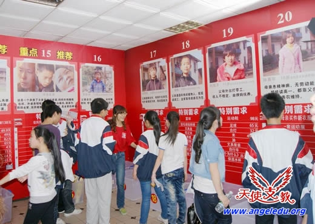
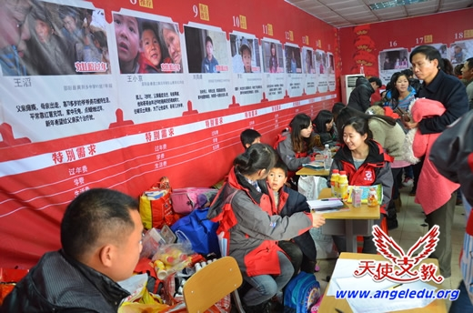
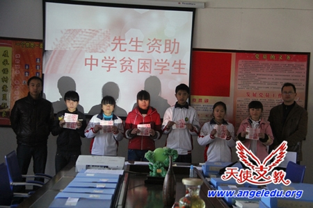

农村孩子的真实需要 -“尊严”
|
农村孩子的真实需要 -“尊严”
当前农村孩子普遍都属于留守少年儿童，而留守少年儿童正处于成长发育的关键时期，他们无法享受到父母在思想认识及价值观念上的引导和帮助，成长中缺少了父母情感上的关爱和呵护，极易产生认识、价值上的偏离和个性、心理发展的异常，一些人甚至会因此而走上犯罪道路。 所以我们所说的农村孩子真实需要，就是指农村孩子在成长过程中最重要、最关键的需求。 现在社会各界人士都对农村孩子，尤其是农村留守儿童给予了极大的关注和支持，但是大家在急于帮助他们的同时，并没有认真了解他们的感受和需要，都是按照自己的主观想象去做出行动。这期间很多做法不但没帮到他们，反而还出现对他们的成长造成严重的伤害。尤其是我们很多人忽视了一点，那就是给予受助人足够的尊重。下面将通过我们身边真实发生的案例来分析“尊严”在农村孩子成长过程中的重要性。

"早期现场活动场景(图片来源网络)"
最近国内某省级电视台有个公益栏目“XXX超市”，节目内容就是通过各种渠道，从贫困地区搜集到一些困难家庭孩子信息，为他们拍摄制作相关的求助视频进行电视节目播放。然后每月将他们的基本求助信息集中在某一天，放在一个特定场所，进行现场展示，再由爱心观众及其他热心人士以认捐的方式进行资助。这个节目一直很受观众认同，求助的孩子们也不断收到大量社会捐赠。
" "

到了2013年春节期前，节目发展到将这些受资助的孩子直接带到活动现场，由爱心人士进行面对面资助。第一期现场面对面资助活动就筹集到了140多万的现金捐赠。
参与现场活动的受助孩子们，通过这种现场捐赠环节，多的可以得到十几万，少的也能有两三万的现金捐赠。 无论从电视节目制作方，还是到场参与的观众及其他爱心人士，都觉得这种活动很好。认为面对面资助既帮助了受助对象，又解决了捐助过程中不透明的问题。 但是事情最后的真实结果又是怎样呢？ 我们的支教志愿者事后找个别当事人调查，而当事受助学生却说出了让人痛心的话：其实当时当着大家的面把钱撕了的心都有了。 为什么会这样呢？很简单，让这些受助孩子胸前贴着带自己名字的号牌，靠着一堵印刷着自己相片、个人家庭信息、求助期望的墙面，坐在那里等待爱心人士的资助，这本身就严重伤害到孩子的自尊心。 在个别学校，还有当地学生在上课时直接去翻初次到校志愿者的包。当志愿者问他们在干什么时，回答居然是：“找钱啊，你们来了不就是给我们钱的吗？” 其实当前社会上类似的现象很多，比如我们很多人在对农村孩子一对一资助时，会要求孩子及家人举着资助的现金进行拍照，这种行为都是典型的不尊重孩子的做法。

当这个活动在网络上引起争论的时候，很多网友纷纷留言讲述自己类似的受助经历。其中有网友就提到自己在读中学时，开学被安排在大会主席台前接受资助金发放，而第二天她就退学了。原因是当时她觉得当着全校那么多学生和老师的面接受资助，自尊心受到了伤害。当前这种资助行为依然广泛存在。"当前还在大量出现的资助场景(图片来源网络)" 如果我们总是用这样的方式来帮助他们，无疑是对孩子自尊心进行着一次又一次的伤害，最后直到他们麻木。 从上面这个事例来看，农村孩子在成长过程中最需要的不是什么物质和金钱，而最需要的是给与他们足够的尊重以维护他们的尊严。 感悟：只有当大众都能明白不管做任何事都要维护彼此的尊严,并高于一切物质利益的时候，这个民族才有真正的希望。呢？
后记:当大家在网上就此活动伤害尊严的话题争论不休时，又从参与争论并之前多次参与现场活动的志愿者那里了解到另一件事。在他们事后回访一些受助学生时，发现一些当事学生接受完资助后已经对学习没了兴趣，甚至经常不去上课。也不把老师和同学放在眼里了。为什么这样？道理很简单，因为他比周围的人有钱了。 可以想象,就算是一个成年人，不劳而获的多了自然就会形成依赖习惯，何况是一个没有任何行为控制能力的孩子。而一个孩子，在没有任何劳动付出时，就突然得到一大笔财富，这将对他们往后的生活行为会产生什么样的影响？ |